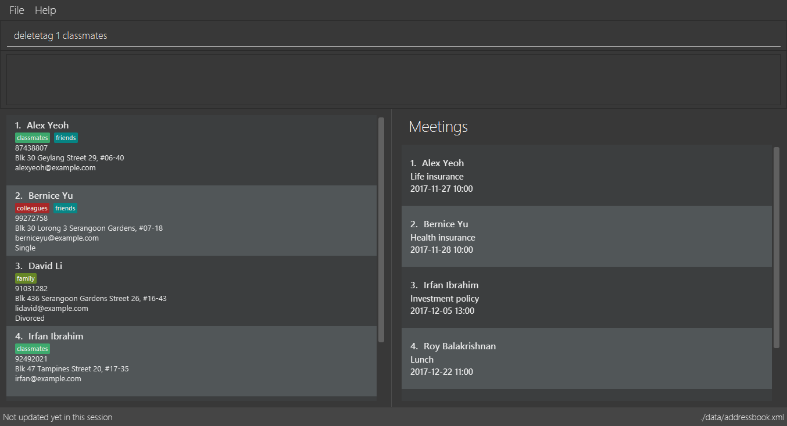
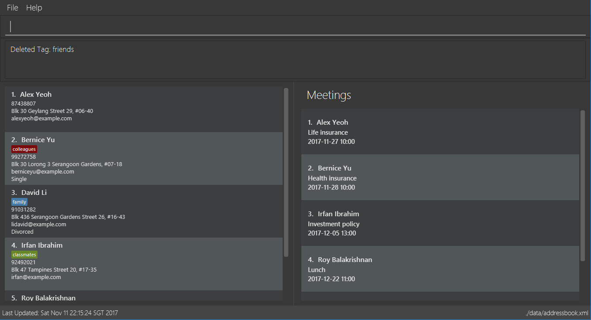
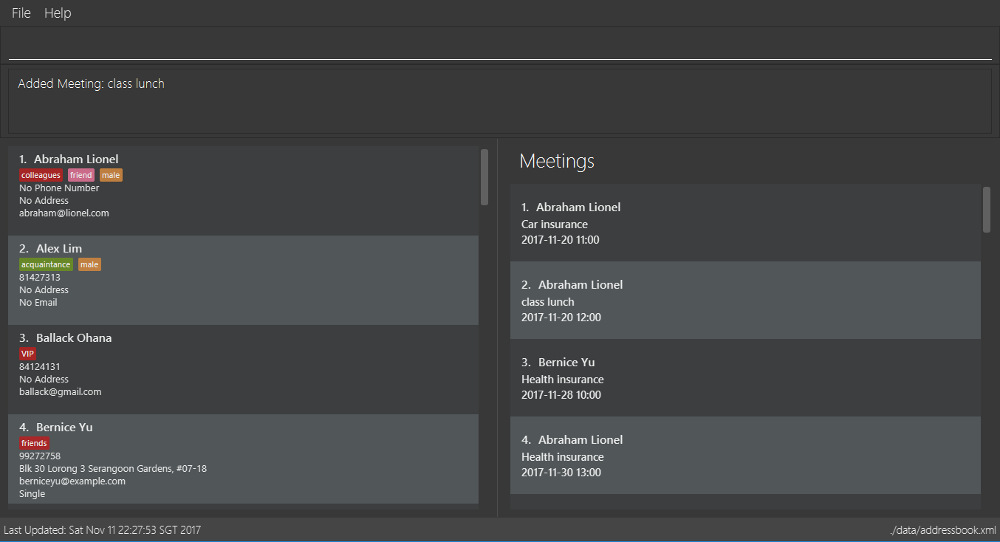
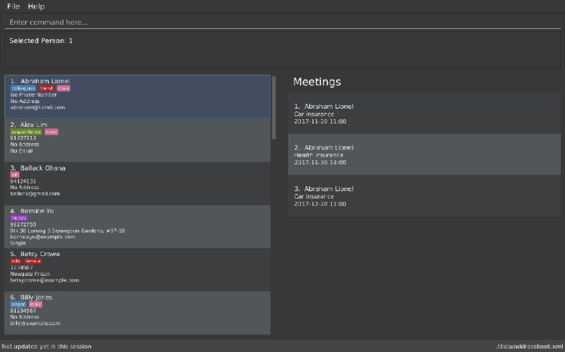
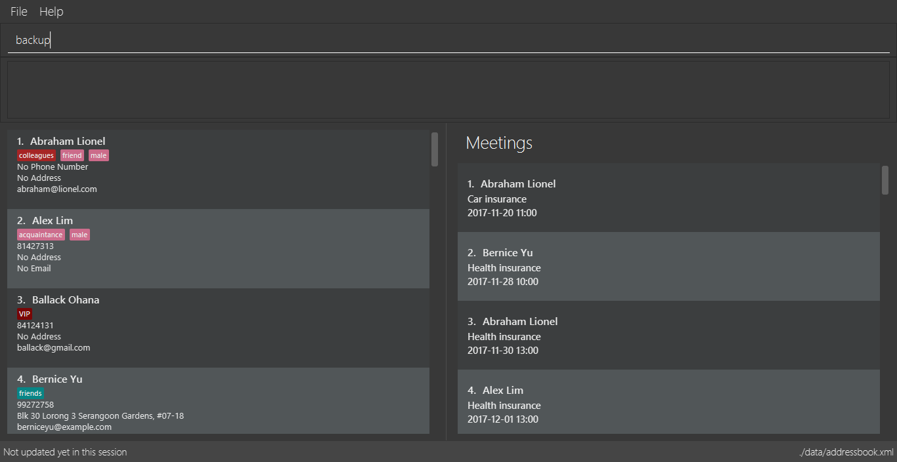
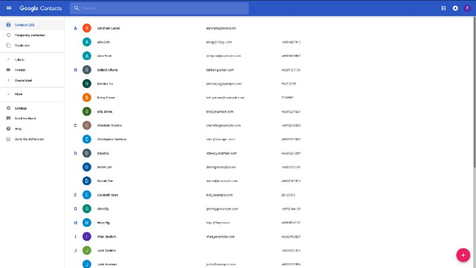
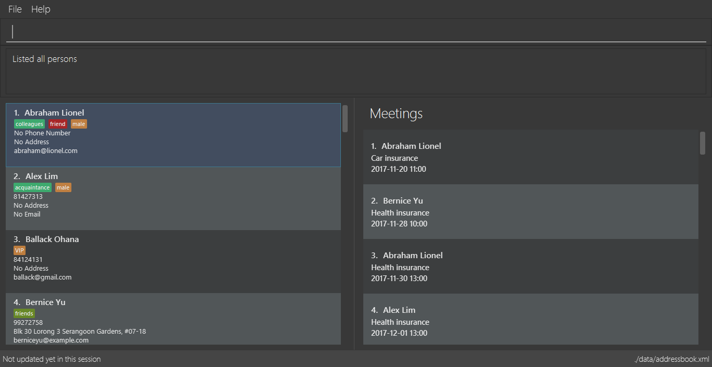
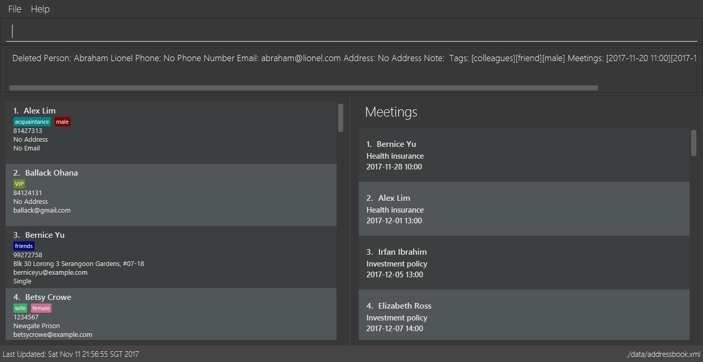
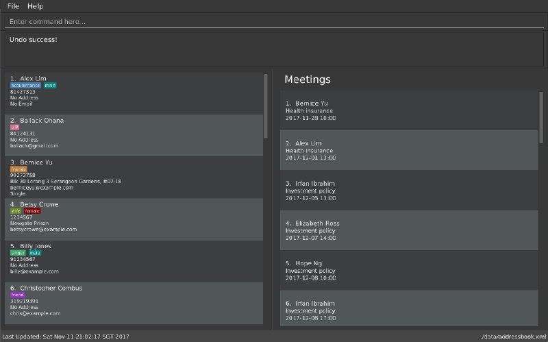
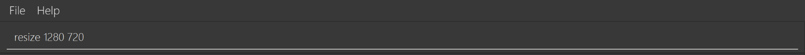

By: Team W13-B3 Since: Jun 2016 Licence: MIT
- 1. Product Overview
- 2. About
- 3. Quick Start
- 4. Features
- 4.1. Viewing help :
help - 4.2. Adding a person:
add - 4.3. Listing all persons :
list - 4.4. Deleting a person :
delete - 4.5. Editing a person :
edit - 4.6. Adding a tag to a person :
addtag - 4.7. Deleting a tag :
deletetag - 4.8. Adding a meeting to a person :
addmeeting - 4.9. Deleting a meeting :
deletemeeting - 4.10. Locating persons by keywords:
find - 4.11. Sorting contact list:
sort - 4.12. Selecting a person :
select - 4.13. Making a note:
note - 4.14. Creating a backup :
backup - 4.15. Restoring a backup :
restore - 4.16. Logging in to Google Contacts:
login - 4.17. Synchronising with Google Contacts :
sync - 4.18. Listing entered commands :
history - 4.19. Undoing previous command :
undo - 4.20. Redoing the previously undone command :
redo - 4.21. Clearing all entries :
clear - 4.22. Resizing the main window :
resize - 4.23. Exiting the program :
exit - 4.24. Saving the data
- 4.1. Viewing help :
- 5. Since v1.2
- 6. Since v1.3
- 7. Coming in v2.0
- 8. FAQ
- 9. Command Summary/ Cheatsheet
1. Product Overview
Product Name: ABC Business Contact
Version: 1.4
ABC is a free desktop contact management application that helps you manage your large collection of contacts conveniently and keep track of your appointments. You can store contacts as well as other information and retrieve them efficiently with the help of ABC.
ABC is available for the Linux, Unix, Windows 10, and Mac OS X operating systems.
2. About
This User Guide introduces a detailed description of the various features that are available to ABC. It also contains a summary of all the commands, giving you a quick overview on how to use all the features. Being familiar with Command-Line Interface(CLI) will help you with understanding the document, but do not worry if you are not. As long as you follow the guide closely, we are sure you can still comprehend the document.
3. Quick Start
-
Ensure you have Java version
1.8.0_60or later installed in your Computer.Having any Java 8 version is not enough.
This app will not work with earlier versions of Java 8. -
Download the latest
ABC.jarhere. -
Copy the file to the folder you want to use as the home folder for your ABC.
-
Double-click the file to start the app. The GUI should appear in a few seconds.
-
Type the command in the command box and press Enter to execute it.
e.g. typinghelpand pressing Enter will open the help window. -
Some example commands you can try:
-
list: lists all contacts -
addn/John Doe p/98765432 e/johnd@example.com a/John street, block 123, #01-01: adds a contact namedJohn Doeto the Address Book. -
delete3: deletes the 3rd contact shown in the current list -
exit: exits the app
-
-
Refer to the Features section below for details of each command.
4. Features
Command Format
-
Command can be substituted with shorthand alias.
-
Words in
UPPER_CASEare the parameters to be supplied by the user e.g. inadd n/NAME,NAMEis a parameter which can be used asadd n/John Doe. -
Items in square brackets are optional e.g
n/NAME [t/TAG]can be used asn/John Doe t/friendor asn/John Doe. -
Items with
… after them can be used multiple times including zero times e.g.[t/TAG]…can be used ast/friend,t/friend t/familyetc. -
Index refers to the index number shown in the last person listing. The index must be a positive integer 1, 2, 3, …
-
Wildcard symbol
*and?are allowed in parameters forfindwhere\*matches any non-space string and?matches any non-space unit-length symbol. -
Suggestions would pop up for partial words keyed in. Press TAB to auto-complete using the first suggestion.
4.1. Viewing help : help
Command Name: help
Shorthand Alias: hp
Function: Displays the User Guide
Format: help
If you want to view the User Guide:
-
Type in
>> help

Figure 4.1.1 -
Press Enter and a User Guide document would show up.
4.2. Adding a person: add
Command Name: add
Shorthand Alias: a
Function: adds a person to ABC
Format: add n/NAME [p/PHONE_NUMBER] [e/EMAIL] [a/ADDRESS] [t/TAG]…
| A person can have any number of tags (including 0) |
| A person can have any number of meetings (including 0) |
Parameters can be in any order e.g. n/NAME p/PHONE_NUMBER, p/PHONE_NUMBER n/NAME are equivalent.
|
If you want to add a new contact to your ABC:
-
Type in (Figure 4.2.1)
>> add n/Betsy Crowe t/friend e/betsycrowe@example.com a/Newgate Prison p/1234567 t/criminal
Figure 4.2.1 -
Press Enter and you should see (Figure 4.2.2):

Figure 4.2.2
Here are some other ways you can add contacts:
-
add n/John Doe p/98765432 e/johnd@example.com a/John street, block 123, #01-01 -
add n/Betsy Crowe t/friend e/betsycrowe@example.com a/Newgate Prison p/1234567 t/criminal -
add n/Jack Daniels -
a n/John Watson p/83331122 e/johnw@example.com a/John Avenue, block 2, #01-01 -
a n/Dave
If you type in all commands shown above, you should see:
4.3. Listing all persons : list
Command Name: list
Shorthand Alias: l
Function: List all contacts in ABC
Format: list
You can view all your contacts by following the steps below:
-
Type in (Figure 4.3.1)
>> list

Figure 4.3.1(findwas run) -
Press Enter. You should now see a list of all your contacts (Figure 4.3.2)

Figure 4.3.2
4.4. Deleting a person : delete
Command Name: delete
Shorthand Alias: d
Function: Deletes the specified person at the specified INDEX from your ABC.
Format: delete INDEX
If you want to delete a contact in your ABC:
-
Locate the contact you want to delete and the index of the contact.
-
Type in the index of the contact. (Figure 4.4.1)
>> delete 1.
Figure 4.4.1 -
Press Enter and you should see that the selected contact has been deleted. (Figure 4.4.2)
Figure 4.4.2
You can also delete contacts in a filtered list:
-
list
delete 2
Deletes the 2nd person in the address book. -
find Betsy
delete 1
Deletes the 1st person in the results of thefindcommand. -
find t/friends
d 4
Deletes the 4th person in the results of thefindcommand.
4.5. Editing a person : edit
Command Name: edit
Shorthand Alias: e
Function: Edits the person at the specified INDEX.
Format: edit INDEX [n/NAME] [p/PHONE] [e/EMAIL] [a/ADDRESS] [t/TAG]… [m/MEETING]…
| A person can have any number of tags (including 0) |
| A person can have any number of meetings (including 0) |
Parameters can be in any order e.g. n/NAME p/PHONE_NUMBER, p/PHONE_NUMBER n/NAME are equivalent.
|
| You must provide at least one of the optional fields. |
If you want to change the details of a contact in your ABC:
-
Locate the contact you want to edit and the index of the contact.
-
Type in the index of the contact, and the details you wish to replace. (Figure 4.5.1)
>> edit 1 p/91234567 e/johndoe@example.com.
Figure 4.5.1 -
Press Enter and you should see that the contact that you selected has been modified. (Figure 4.5.2)
Figure 4.5.2
|
Existing values will be updated to the input values. |
You can also edit contacts in a filtered list:
-
>> find t/friends
>> edit 2 n/Betsy Crower t/
Edits the name of the 2nd person in the results of thefindcommand to beBetsy Crowerand clears all existing tags.
|
You can remove all the person’s tags by typing |
-
>> find Betsy
>> e 1 t/friend
Edits the tag of the 1st person in the results of thefindcommand.
|
When you edit tags, the existing tags of the person will be removed. To add tags cumulatively, use |
4.6. Adding a tag to a person : addtag
Command Name: addtag
Shorthand Alias: at
Function: Adds a tag to an existing person at the specified INDEX in your ABC.
Format: addtag INDEX TAG
| Only one alphanumeric tag can be added at a time. Special characters will not be accepted. e.g !, @, #, … |
If you want to add a single tag to a contact in your ABC:
-
Locate the contact you want to add a tag to and the index of the contact.
-
Type in the index of the contact, and the tag you wish to add. (Figure 4.6.1)
>> addtag 1 classmate.
Figure 4.6.1 -
Press Enter and you should see that the contact that you selected has been modified. (Figure 4.6.2)

Figure 4.6.2
|
The tag added must not already exist on the desired contact. |
You can also add tags to contacts in a filtered list:
-
>> find t/friends
>> addtag 2 friends
Adds thefriendstag to the 2nd person in the results of thefindcommand. -
>> find John
>> at 1 9pmclass
Adds the9pmclasstag to the 1st person in the results of thefindcommand.
4.7. Deleting a tag : deletetag
Command Name: deletetag
Shorthand Alias: dt
Function: Deletes the specified tag from an existing person at the specified INDEX in your ABC.
Can also remove all instances of a tag from your ABC.
Format: deletetag INDEX TAG
If you want to delete a single tag from a contact in your ABC:
-
Locate the contact you want to delete a tag from and the index of the contact.
-
Type in the index of the contact, and the tag you wish to delete. (Figure 4.7.1)
>> deletetag 1 classmate. 
Figure 4.7.1 -
Press Enter and you should see that the contact that you selected has been modified. (Figure 4.7.2)

Figure 4.7.2
You can also delete tags from contacts in a filtered list:
-
>> find t/friends
>> deletetag 2 friends
Deletes thefriendstag from the 2nd person in the results of thefindcommand. -
>> find n/John
>> dt 1 9pmclass
Deletes the9pmclasstag from the 1st person in the results of thefindcommand.
If you would like to delete all instances of a particular tag from your ABC:
-
Type in
all, followed by the tag you wish to delete. (Figure 4.7.3)
>> deletetag all friends.
Figure 4.7.3 -
Press Enter and you should see that this tag has been deleted from all contacts. (Figure 4.7.4)

Figure 4.7.4
4.8. Adding a meeting to a person : addmeeting
Command Name: addmeeting
Shorthand Alias: am
Function: Adds a meeting to an existing person at the specified INDEX in your ABC.
Format: addmeeting MEETING_NAME/MEETING_TIME
MEETING_TIME must be in the format YYYY-MM-DD HH:MM
|
If you want to add a single meeting to a contact in your ABC:
-
Locate the contact you want to add a meeting to and the index of the contact.
-
Type in the index of the contact, the name of the meeting and the time of the meeting you wish to add. (Figure 4.8.1)
>> addmeeting 1 class lunch/2017-12-20 12:00.
Figure 4.8.1 -
Press Enter and you should see that the contact that you selected has been modified. (Figure 4.8.2)

Figure 4.8.2
|
The meeting added must not already exist on the desired contact. |
You can also add meetings to contacts in a filtered list:
-
>> find t/friends
>> addmeeting 2 breakfast/2017-12-15 10:00
Adds a meeting namedbreakfastat2017-12-15 10:00to the 2nd person in the results of thefindcommand.
4.9. Deleting a meeting : deletemeeting
Command Name: deletemeeting
Shorthand Alias: dm
Function: Deletes the specified meeting at the specified INDEX in the meeting list from your ABC.
Format: deletemeeting INDEX
If you want to delete a meeting in your ABC:
-
Locate the meeting you want to delete and the meeting of the contact.
-
Type in the index of the meeting. (Figure 4.9.1)
>> deletemeeting 1.
Figure 4.9.1 -
Press Enter and you should see that the selected meeting has been deleted. (Figure 4.9.2)

Figure 4.9.2
You can also delete contacts in a filtered list:
-
list
deletemeeting 2
Deletes the 2nd meeting in the address book. -
find Betsy
deletemeeting 1
Deletes the 1st meeting in the results of thefindcommand. -
find t/friends
dm 4
Deletes the 4th meeting in the results of thefindcommand.
4.10. Locating persons by keywords: find
Command Name: find
Shorthand Alias: f
Function : Finds persons whose specified fields contain any of the given keywords.
Format: find [n/KEYWORD…] [p/KEYWORD…] [e/KEYWORD…] [a/KEYWORD…] [t/KEYWORD…]
[NOTE] There must be at least one argument.
If you want to find a person named John Watson:
-
Type in (Figure 4.8.1)
>> find n/john
Figure 4.8.1 -
Press Enter and you should see a list of persons having the name
john: (Figure 4.8.2)
Figure 4.8.2
Here are some other commands you can do with find:
-
find Betsy Tim John
Lists any person having namesBetsy,Tim, orJohn -
f Watson
Lists any person having the nameWatson -
find j*
Lists any person whose name starts withj
4.11. Sorting contact list: sort
Command Name: sort
Shorthand Alias: s
Function: Sorts the contact list in alphabetical order of a FIELD
Format: sort FIELD
Only one FIELD (NAME, PHONE, ADDRESS, EMAIL, TAG, MEETING) can be used at a time.
|
For fields with multiple entries (TAG, MEETING), the order is detemined by using the entry which comes first alphabetically for each contact.
|
If you would like to sort your contact list:
-
Type in the
FIELDyou would like to sort your contact list by (Figure 4.10.1)
>> sort name

Figure 4.10.1 -
Press
Enterand your contact list will be sorted (Figure 4.10.2).
Figure 4.10.2
Here are some other ways to sort your contact list:
-
sort phone
Sorts the contact list by phone number. -
s tag
Sorts the contact list by tag. -
sort meeting
Sorts the contact list by meeting time.
4.12. Selecting a person : select
Command Name: select
Shorthand Alias: sl
Function: Select a contact with the specified INDEX
Format: select INDEX
| The index refers to the index number shown in the most recent listing. |
The index must be a positive integer 1, 2, 3, …
|
You can select a contact from the displayed list by:
-
Typing (Figure 4.11.1)
>>select 1

Figure 4.10.1
. Pressing Enter. Your choice should now be selected (Figure 4.10.2)

Figure 4.11.2
Here is another way to select a contact:
-
s 1
Examples:
-
list
select 2
Selects the 2nd person in the address book. -
find Betsy
select 1
Selects the 1st person in the results of thefindcommand. -
list
s 7
Selects the 7th person in the address book.
4.13. Making a note: note
Command Name: note
Shorthand Alias: n
Function: Inserts the NOTE for an entry specified by INDEX in the ABC
Format: note INDEX [n/NOTE]
| Each contact can only have a maximum of 1 note |
Notes can be blank to delete existing notes, i.e. note n/
|
If you want to add a note for a ABC contact:
-
Locate the index of the contact
-
Type in your desired INDEX and NOTE (Figure 4.12.1)
>> note 1 n/This is an important note

Figure 4.12.1 -
Press Enter. Your note should now be displayed as the last row in your contact’s details (Figure 4.12.2)
Figure 4.12.2
Here are some other ways to change your ABC contact’s note:
-
note 2 n/
Removes all existing notes from the 2nd person -
n 3 n/This is a note
Changes the 3rd contact’s note to "This is a note" -
n 3 n/
Removes all existing notes from the 3rd person
4.14. Creating a backup : backup
Command Name: backup
Shorthand Alias: b
Function: Creates a backup file to store the data in address book.
Format: backup
You may want to be safe and backup often when using ABC:
-
Type in
backup. (Figure 4.13.1)
>> backup

Figure 4.13.1 -
Press Enter and you should see a message indicating the successful backup of your data. (Figure 4.13.2)

Figure 4.13.2
| Your data is automatically backed up every time you close the app. |
4.15. Restoring a backup : restore
Command Name: restore
Shorthand Alias: rb
Function: Retrieves data from a backup file and store it in ABC.
Format: restore
You encounter an unforeseen circumstance and want to revert to a backup file:
-
Execute the
backupcommand to save the current data. (Figure 4.14.1)
>> backup

Figure 4.14.1 -
Enter the
clearcommand to simulate a lost of data. (Figure 4.14.2)
>> clear
Figure 4.14.2 -
Type in
restorecommand. (Figure 4.14.3)
>> restore

Figure 4.14.3 -
Press Enter and you should see that the backup data is restored. (Figure 4.14.4)

Figure 4.14.4
| An error message will be shown if you do not already have a backup file in the default file path. (Figure 4.13.5) |

Figure 4.13.5
4.16. Logging in to Google Contacts: login
Command Name: login
Shorthand Alias: sy
Function: Logs in to Google Contacts
Format: login
If you would like to login to Google Contacts before running sync:
-
Type in (Figure 4.14.1)
`>> login

Figure 4.14.1 -
Press Enter. Your default browser should open a login window (Figure 4.15.2)

Figure 4.14.2 -
Enter your login details and press Next (Figure 4.15.3)

Figure 4.14.3
. Allow ABC to access your Google Contacts information (Figure 4.14.4)
Figure 4.14.4
Here are some other ways to sort your contact list:
-
sort phone
Sorts the contact list by phone number. -
s tag
Sorts the contact list by tag. -
sort meeting
Sorts the contact list by meeting time.
4.17. Synchronising with Google Contacts : sync
Command Name: sync
Shorthand Alias: sy
Function: Synchronise your contacts with Google Contacts after authentication
Format: sync
| A browser is necessary for logging in to Google |
You have to run the login command before you can run sync
|
You can easily synchronise your ABC contacts with Google Contacts through the following steps:
-
Type (Figure 4.15.1)
>> sync

Figure 4.15.1 -
Your contacts are now synchronised. Figure (4.15.5)

Figure 4.15.5
4.18. Listing entered commands : history
Command Name: history
Shorthand Alias: hx
Function: Lists all the commands that you have entered in reverse chronological order.
Format: history
| Pressing the ↑ and ↓ arrows will display the previous and next input respectively in the command box. |
If you want to view the list of commands entered:
-
Type in (Figure 4.16.1)
>> history

Figure 4.16.1 -
Press Enter and the lists of commands that you entered before would show up.
4.19. Undoing previous command : undo
Command Name: undo
Shorthand Alias: u
Function: Restore the address book to the state where the previous undoable command was not executed.
Format: undo
|
Undoable commands: those commands that modify the address book’s content. They include |
When you delete a contact by accident:
-
Remove the first contact. (Figure 4.17.1)
>> delete 1

Figure 4.17.1 -
Type in the
undocommand. (Figure 4.17.2)
>> undo
Figure 4.17.2 -
Press Enter and you should see that the effects of
delete 1has been reverted. (Figure 4.17.3)

Figure 4.17.3
The following are more examples to help you better understand the undo command:
-
Failure to
undoas there are no undoable commands executed previously.-
Restart the application.
-
Select the first contact. (Figure 4.17.4)
>> select 1

Figure 4.17.4 -
List all the contacts. (Figure 4.17.5)
>> list

Figure 4.17.5 -
Type in
undoand you will see an error message. (Figure 4.17.6)
>> undo
Figure 4.17.6
-
-
Attempting to
undomultiple commands.-
Delete the first contact. (Figure 4.17.7)
>> delete 1

Figure 4.17.7 -
Clear out all the contacts. (Figure 4.17.8)
>> clear
Figure 4.17.8 -
Type in the shorthand alias for
undo(Figure 4.17.9)
>> u
Figure 4.17.9 -
Press Enter and you should see that the
clearcommand is reverted. (Figure 4.17.10)+
Figure 4.17.10 -
Type in
undoand you should see that thedelete 1command is reverted as well. (Figure 4.17.11)+>> undo
Figure 4.17.11
-
4.20. Redoing the previously undone command : redo
Command Name: redo
Shorthand Alias: r
Function: Reverts the most recent undo command.
Format: redo
You delete a contact and undo the delete by mistake:
-
Type in the command to delete the first contact. (Figure 4.18.1)
>> delete 1

Figure 4.18.1 -
Press Enter and the contact is removed. (Figure 4.18.2)+

-
Type in
undoby mistake. (Figure 4.18.3)
>> undo

Figure 4.18.3 -
Enter the command
redoto revert theundocommand. (Figure 4.18.4)
>> redo

Figure 4.18.4 -
Press Enter and you shoud see that the
undocommand has been reverted and the contact remains deleted. Refer to Fig to see that you have obtained the correct results. (Figure 4.18.5)
Figure 4.18.5
The following are more examples to help you better understand the redo command.
-
Failure to
redoas there are noundocommands executed previously:-
Select a contact to delete. (Figure 4.18.6)
>> delete 1
Figure 4.18.6 -
Type in the
redocommand. (Figure 4.18.7)+>> redo
Figure 4.18.7 -
Press Enter and you should see an error message. (Figure 4.18.8)

Figure 4.18.8
-
-
Attempting to
redomultiple commands:-
Select a contact to delete. (Figure 4.18.9)
>> delete 1
Figure 4.18.9 -
Remove all the contacts by
clearcommand. (Figure 4.18.10)
>> clear
Figure 4.18.10 -
Type in
undoto revert theclearcommand. (Figure 4.18.11)
>> undo

Figure 4.18.11 -
Type in
undoto revert thedelete 1command. (Figure 4.18.12)
>> undo

Figure 4.18.12 -
Type in
redoto reapply thedelete 1command. (Figure 4.18.13)
>> redo
Figure 4.18.13 -
Type in
redoto reapply theclearcommand. (Figure 4.18.14)
>> redo

Figure 4.18.14
-
4.21. Clearing all entries : clear
Command Name: clear
Shorthand Alias: c
Function: Clears all existing contacts in the ABC
Format: clear
You can also clear all ABC contacts. To do so,
-
Type (Figure 4.19.1)
>> clear
Figure 4.19.1 -
Press Enter. Your contacts should now be cleared (Figure 4.19.2)

Figure 4.19.2
4.22. Resizing the main window : resize
Command Name: resize
Shorthand Alias: rs
Function: Resizes the main window to the specified width and height in pixels
Format: resize WIDTH HEIGHT
Restriction on WIDTH and HEIGHT: WIDTH < = width of the screen display, HEIGHT < = height of the screen display
|
You CANNOT undo a resize command
|
If you want to resize your main window to 1280 * 720:
-
Type in (Figure 4.20.1)
>> resize 1280 720

Figure 4.20.1 -
Press Enter and the main window would be resized to 1280 * 720.
4.23. Exiting the program : exit
Command Name: exit
Shorthand Alias: q
Function: Exits the app.
Format: exit
If you want to close the app:
-
Type in the command. (Figure 4.21.1)
>> exit
Figure 4.20.1 -
Press Enter and you will see that ABC is closed.
Do not worry about losing your contacts as they will be saved automatically.
4.24. Saving the data
Address book data are saved in the hard disk automatically after any command that changes the data.
There is no need to save manually.
5. Since v1.2
-
Adding and deleting of tags
-
Resize window size
-
Restore to a AddressBook backup
-
Synchronise with Google Contacts
6. Since v1.3
-
Add a person without all his/her parameters
-
Confirmation for restoring a backup
-
Wildcard
*for searching of contacts -
Meetings
7. Coming in v2.0
-
Add tags cumulatively
-
Hide private contact details
-
Access a contact’s Facebook profile
-
Get direction to a contact’s address
-
Upload pictures
-
Clear command to reset application to starting state
-
Theme and plugin manager
-
Encrypt private information
-
Add and view Favourites
-
Email contacts directly in AddressBook
-
Use regex in
findcommand
8. FAQ
Q: How do I transfer my data to another Computer?
A: Install the app in the other computer and overwrite the empty data file it creates with the file that contains the data of your previous ABC folder.
Q: I can’t sync my contacts with my Google contacts!
A: Make sure you have a default browser enabled as attempting to sync your data
will open up a new window in your default browser.
Q: I have a question that isn’t answered here. How do I get further support?
A: You can contact us by email.
9. Command Summary/ Cheatsheet
| Command | Alias |
|---|---|
Format |
Help |
|
|
Add |
|
|
List |
|
|
Delete |
|
|
Edit |
|
|
Add Tag |
|
|
Delete Tag |
|
|
Add Meeting |
|
|
Delete Meeting |
|
|
Find |
|
|
Select |
|
`select INDEX |
Note |
|
|
Backup |
|
|
Restore Backup |
|
'restore' |
Synchronise with Google Contacts |
|
|
History |
'hx' |
|
Undo |
|
|
Redo |
|
|
Clear |
|
|
Resize |
|
|
Exit |
|
exit |
Saving Data |